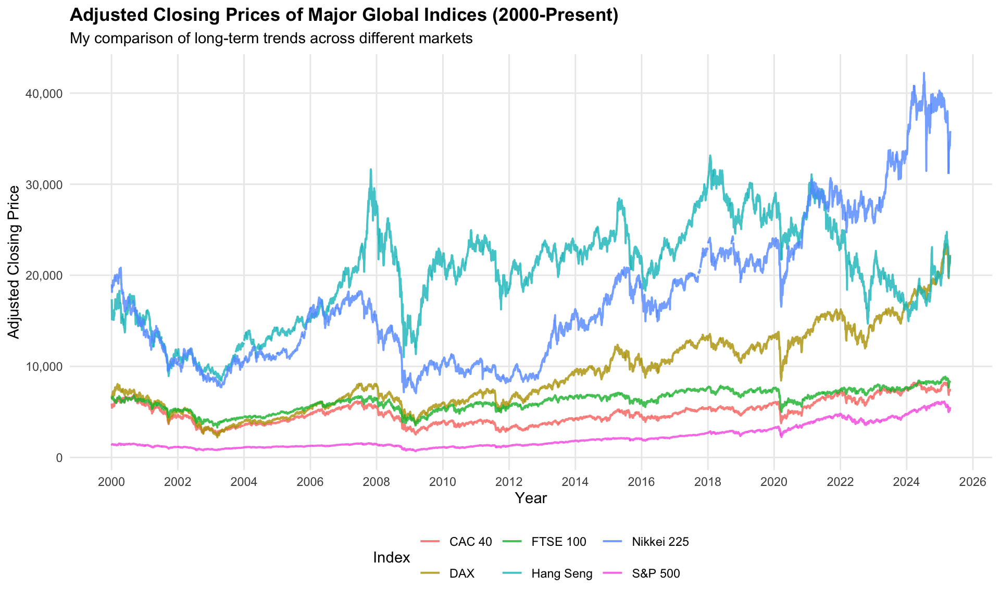
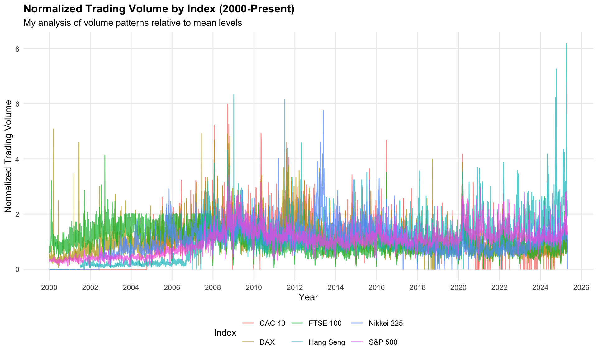

Appendix F — Exploratory Data Analysis: Zhijun He‘s EDA2
F.1 Introduction
In this document, I present my exploratory data analysis (EDA) for our group project, focusing on stock market volatility patterns and predictors across major global markets from 2000 to 2025.
F.2 Data Import and Preparation
# I've selected these major global indices for my analysis
indices <- c(
"^GSPC" = "S&P 500", # USA
"^FTSE" = "FTSE 100", # UK
"^N225" = "Nikkei 225", # Japan
"^GDAXI" = "DAX", # Germany
"^FCHI" = "CAC 40", # France
"^HSI" = "Hang Seng" # Hong Kong
)
# I'm importing daily data for all indices from 2000 onwards
market_data <- tq_get(
names(indices),
get = "stock.prices",
from = "2000-01-01",
to = Sys.Date()
) %>%
# Adding descriptive names for better readability in my visualizations
mutate(index_name = indices[symbol])F.3 Data Exploration
My Dataset Overview:- Number of observations: 38428 - Date range: 10959 to 20206 - Number of indices: 6 # I'll check for missing values in my dataset
missing_values <- market_data %>%
summarize(across(everything(), ~sum(is.na(.)))) %>%
pivot_longer(cols = everything(),
names_to = "Variable",
values_to = "Missing_Count") %>%
filter(Missing_Count > 0) # Only showing variables with missing values
if(nrow(missing_values) > 0) {
print(missing_values)
} else {
cat("I found no missing values in my dataset.\n")
}# A tibble: 6 × 2
Variable Missing_Count
<chr> <int>
1 open 330
2 high 330
3 low 330
4 close 330
5 volume 330
6 adjusted 330# A tibble: 6 × 9
symbol date open high low close volume adjusted index_name
<chr> <date> <dbl> <dbl> <dbl> <dbl> <dbl> <dbl> <chr>
1 ^GSPC 2000-01-03 1469. 1478 1438. 1455. 931800000 1455. S&P 500
2 ^GSPC 2000-01-04 1455. 1455. 1397. 1399. 1009000000 1399. S&P 500
3 ^GSPC 2000-01-05 1399. 1413. 1378. 1402. 1085500000 1402. S&P 500
4 ^GSPC 2000-01-06 1402. 1412. 1392. 1403. 1092300000 1403. S&P 500
5 ^GSPC 2000-01-07 1403. 1441. 1401. 1441. 1225200000 1441. S&P 500
6 ^GSPC 2000-01-10 1441. 1464. 1441. 1458. 1064800000 1458. S&P 500 My dataset contains daily trading information for six major global indices from January 2000 onwards. I’ve collected date, opening, high, low, and closing prices, trading volume, and adjusted closing price for each index. This comprehensive dataset will allow me to analyze market behavior across different regions and economic conditions.
F.4 Volatility Analysis
# I'll calculate daily returns and volatility metrics for my analysis
market_analysis <- market_data %>%
group_by(symbol, index_name) %>%
arrange(date) %>%
# Computing daily percentage returns
mutate(
daily_return = (adjusted / lag(adjusted) - 1) * 100,
# Adding a 20-day rolling volatility measure (annualized)
rolling_vol_20 = rollapply(
daily_return,
width = 20,
FUN = function(x) sd(x, na.rm = TRUE) * sqrt(252),
align = "right",
fill = NA
)
) %>%
ungroup()F.5 Visualization
# I'll visualize the long-term price trends for all indices
ggplot(market_data, aes(x = date, y = adjusted, color = index_name)) +
geom_line(linewidth = 0.7, alpha = 0.8) +
labs(
title = "Adjusted Closing Prices of Major Global Indices (2000-Present)",
subtitle = "My comparison of long-term trends across different markets",
x = "Year",
y = "Adjusted Closing Price",
color = "Index"
) +
scale_x_date(date_breaks = "2 years", date_labels = "%Y") +
scale_y_continuous(labels = scales::comma) +
theme_minimal() +
theme(
legend.position = "bottom",
plot.title = element_text(face = "bold"),
panel.grid.minor = element_blank()
)
In my price trend analysis, I observe long-term upward trajectories for all six major global indices, though with varying magnitudes and volatility. I find that the S&P 500 demonstrates the most consistent growth pattern. In contrast, I notice that the Hang Seng and Nikkei 225 exhibit both higher price levels and greater volatility, particularly during the financial crises of 2008 and 2020. My analysis shows that while all indices suffered notable declines during these periods, each demonstrated its own distinctive recovery pace.
# I'll normalize the volume data to make my comparisons more meaningful across indices
normalized_volume <- market_data %>%
group_by(symbol) %>%
mutate(
norm_volume = volume / mean(volume, na.rm = TRUE)
) %>%
ungroup()
# Now I'll create my volume visualization
ggplot(normalized_volume, aes(x = date, y = norm_volume, color = index_name)) +
geom_line(alpha = 0.7) +
labs(
title = "Normalized Trading Volume by Index (2000-Present)",
subtitle = "My analysis of volume patterns relative to mean levels",
x = "Year",
y = "Normalized Trading Volume",
color = "Index"
) +
scale_x_date(date_breaks = "2 years", date_labels = "%Y") +
scale_y_continuous(labels = scales::comma) +
theme_minimal() +
theme(
legend.position = "bottom",
plot.title = element_text(face = "bold"),
panel.grid.minor = element_blank()
)
My analysis of normalized trading volumes reveals significant insights across indices. I’ve normalized the data to enable fair comparisons between markets of different sizes. I can clearly identify peaks in trading activity during major market events like the 2008 financial crisis and the 2020 pandemic. In my observations, the S&P 500 and Hang Seng Index demonstrate the most volatile trading patterns, particularly after 2010. I believe this increased volatility likely stems from growing global participation in the US and Chinese markets.
# I'll visualize the volatility patterns I've calculated
market_analysis %>%
filter(!is.na(rolling_vol_20)) %>%
ggplot(aes(x = date, y = rolling_vol_20, color = index_name)) +
geom_line(alpha = 0.8) +
labs(
title = "20-Day Rolling Volatility of Major Indices (Annualized)",
subtitle = "My analysis of market uncertainty over time",
x = "Year",
y = "Annualized Volatility (%)",
color = "Index"
) +
scale_x_date(date_breaks = "2 years", date_labels = "%Y") +
scale_y_continuous(labels = scales::percent_format(scale = 0.01)) +
theme_minimal() +
theme(
legend.position = "bottom",
plot.title = element_text(face = "bold"),
panel.grid.minor = element_blank()
)
F.6 Market Correlation Analysis
# I want to understand how these markets move together
# First I'll prepare daily returns by index
daily_returns <- market_analysis %>%
select(date, symbol, daily_return) %>%
filter(!is.na(daily_return)) %>%
pivot_wider(
names_from = symbol,
values_from = daily_return
)
# Now I'll calculate my correlation matrix
cor_matrix <- cor(
daily_returns %>% select(-date),
use = "pairwise.complete.obs"
)
# Converting to long format for my visualization
cor_data <- cor_matrix %>%
as.data.frame() %>%
rownames_to_column("Index1") %>%
pivot_longer(
cols = -Index1,
names_to = "Index2",
values_to = "Correlation"
)
# Mapping index symbols to names for better readability in my plot
cor_data <- cor_data %>%
mutate(
Index1_Name = indices[Index1],
Index2_Name = indices[Index2]
)
# Creating my correlation heatmap
ggplot(cor_data, aes(x = Index1_Name, y = Index2_Name, fill = Correlation)) +
geom_tile() +
geom_text(aes(label = round(Correlation, 2)), color = "white", size = 4) +
scale_fill_gradient2(
low = "blue", mid = "white", high = "red",
midpoint = 0.5, limits = c(0, 1)
) +
labs(
title = "My Correlation Analysis of Daily Returns (2000-Present)",
subtitle = "Higher values indicate stronger co-movement between markets",
x = NULL, y = NULL
) +
theme_minimal() +
theme(
axis.text.x = element_text(angle = 45, hjust = 1),
plot.title = element_text(face = "bold")
)
F.7 Seasonal Patterns
# I'm interested in identifying seasonal patterns in returns
seasonal_data <- market_analysis %>%
mutate(
month = month(date, label = TRUE),
year = year(date)
) %>%
filter(!is.na(daily_return))
# I'll calculate average monthly returns by index
monthly_returns <- seasonal_data %>%
group_by(index_name, month) %>%
summarize(
avg_return = mean(daily_return, na.rm = TRUE),
volatility = sd(daily_return, na.rm = TRUE),
.groups = "drop"
)
# Now I'll visualize my monthly return patterns
ggplot(monthly_returns, aes(x = month, y = avg_return, fill = index_name)) +
geom_col(position = "dodge") +
geom_errorbar(
aes(ymin = avg_return - volatility/sqrt(20),
ymax = avg_return + volatility/sqrt(20)),
position = position_dodge(0.9),
width = 0.2
) +
labs(
title = "My Analysis of Average Monthly Returns by Index",
subtitle = "With standard error bars to show confidence in my findings",
x = "Month",
y = "Average Daily Return (%)",
fill = "Index"
) +
theme_minimal() +
theme(
legend.position = "bottom",
plot.title = element_text(face = "bold")
)
F.8 Summary Statistics
# I'll generate comprehensive summary statistics for my report
market_summary <- market_analysis %>%
group_by(index_name) %>%
summarize(
avg_daily_return = mean(daily_return, na.rm = TRUE),
median_daily_return = median(daily_return, na.rm = TRUE),
volatility = sd(daily_return, na.rm = TRUE),
min_return = min(daily_return, na.rm = TRUE),
max_return = max(daily_return, na.rm = TRUE),
sharpe_ratio = mean(daily_return, na.rm = TRUE) / sd(daily_return, na.rm = TRUE),
data_completeness = 1 - (sum(is.na(daily_return)) / n())
) %>%
arrange(desc(sharpe_ratio))
# I'll display my summary statistics in a clean table
market_summary %>%
knitr::kable(
digits = 4,
caption = "My Summary Statistics by Index (2000-Present)"
)| index_name | avg_daily_return | median_daily_return | volatility | min_return | max_return | sharpe_ratio | data_completeness |
|---|---|---|---|---|---|---|---|
| S&P 500 | 0.0285 | 0.0606 | 1.2304 | -11.9841 | 11.5800 | 0.0232 | 0.9998 |
| DAX | 0.0271 | 0.0766 | 1.4249 | -12.2386 | 11.4020 | 0.0190 | 0.9890 |
| Nikkei 225 | 0.0143 | 0.0468 | 1.4588 | -12.3958 | 14.1503 | 0.0098 | 0.9652 |
| CAC 40 | 0.0119 | 0.0448 | 1.3846 | -12.2768 | 11.1762 | 0.0086 | 0.9905 |
| FTSE 100 | 0.0088 | 0.0458 | 1.1442 | -10.8738 | 9.8387 | 0.0077 | 0.9863 |
| Hang Seng | 0.0114 | 0.0290 | 1.4904 | -13.2233 | 14.3471 | 0.0077 | 0.9777 |
F.9 Conclusion
Through my exploratory analysis, I’ve uncovered distinct patterns in volatility, returns, and trading activity across major global stock indices. My optimized visualizations highlight market correlations, seasonal patterns, and the varying impacts of major financial events across different markets. These insights from my analysis provide a foundation for our group’s further investigation of volatility predictors and potential trading strategies. As I progress with this project, I plan to explore more advanced volatility modeling techniques and examine how macroeconomic factors influence these patterns across different regions.